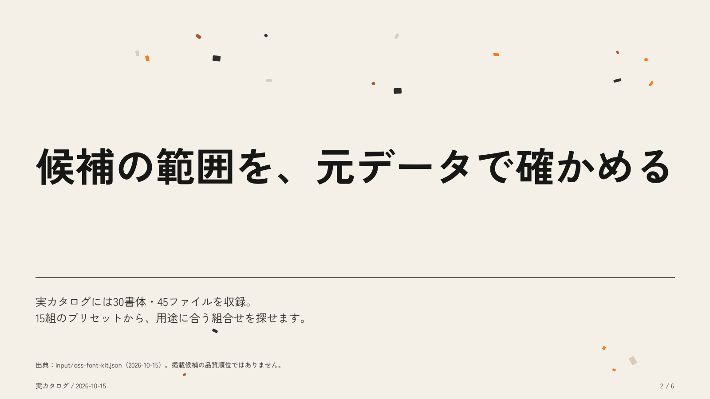
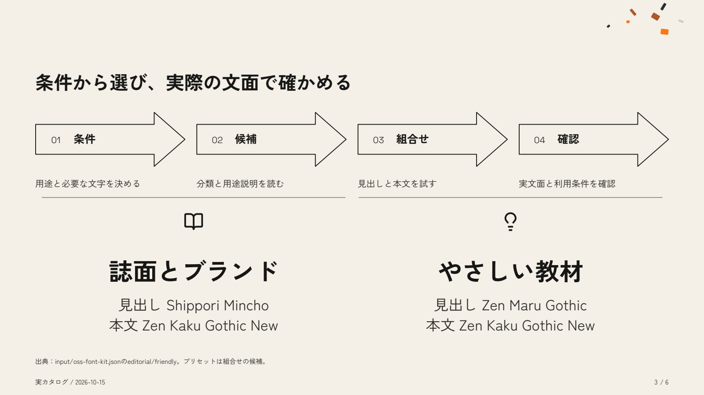
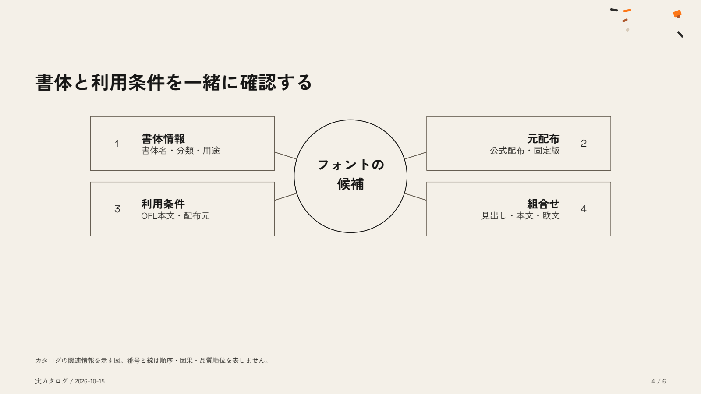
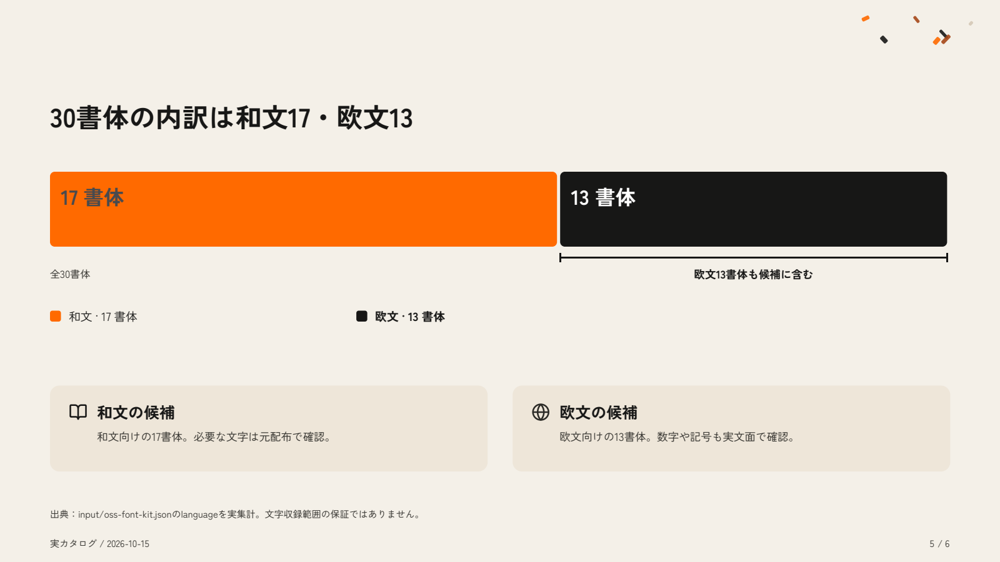
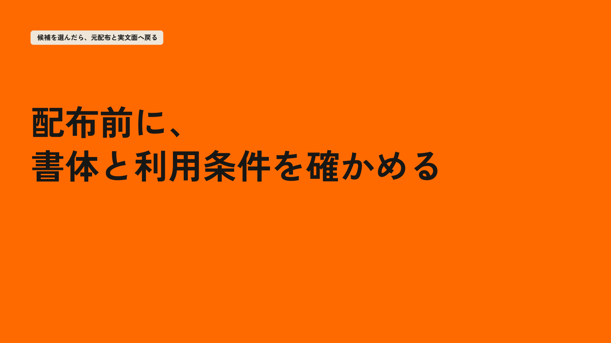

<!doctype html><html lang="ja"><meta charset="utf-8"><meta name="viewport" content="width=device-width"><title>資料に使うフォントを選ぶ</title><style>body{margin:0;background:#171716;color:#f4f0e8;font-family:sans-serif}header{padding:28px 5vw}a{color:#ff9a52}main{padding:0 5vw 50px;display:grid;gap:28px}img{width:100%;display:block}figure{margin:0}</style><header><h1>資料に使うフォントを選ぶ</h1><p>実フォントカタログ / 原典検査済み・独立再評価待ち</p><a href=".pptwise/input/deck.pptx">完成PowerPoint</a> · <a href="render/deck.pdf">PDF</a> · <a href="SKILL.md">日本語SKILL</a></header><main><figure></figure><figure></figure><figure></figure><figure></figure><figure></figure><figure></figure></main></html>